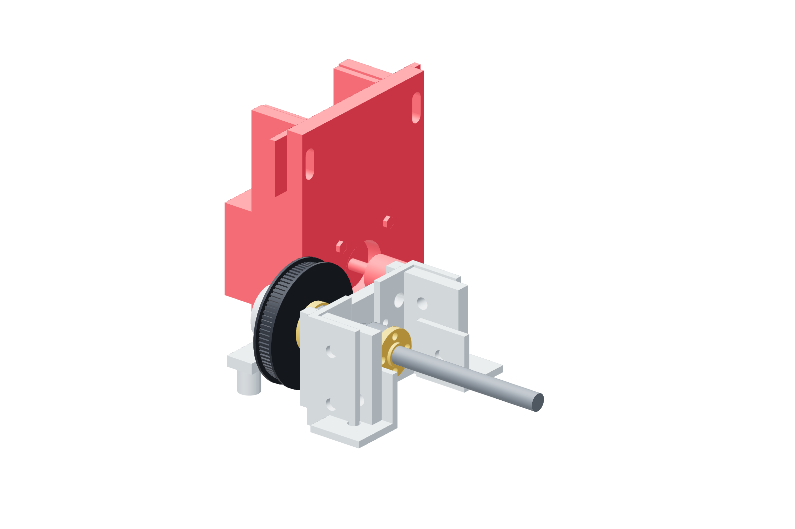

Screw drives / six copies50 / 179
Mount the motor and pinion
The slotted motor plate gives belt tension adjustment. The 20T pinion is metal and sits on the motor's 5 mm shaft with its teeth aligned to the 80T pulley.
AddPer drive: NEMA17 · motor-tension-plate · four M3 × 12 · 20T pinion · two M5 mounting bolts
Tools / setup2.5 / 4 mm hex · pinion setscrew key · caliper

- Start four M3 × 12 screws into the motor face, then seat them in opposite pairs.
- Put the pinion on the shaft with one setscrew on the shaft flat; leave its axial setting adjustable.
- Start both M5 slot bolts into the metal support and slide the motor inward.
- Align the two tooth tracks using the belt's straight edges, then secure the pinion.
Ready when
The two pulley tracks are coplanar and the motor plate can still move through its tension slots. A tilted plate or offset track walks the belt sideways. Seat the plate and realign the pinion before tensioning.